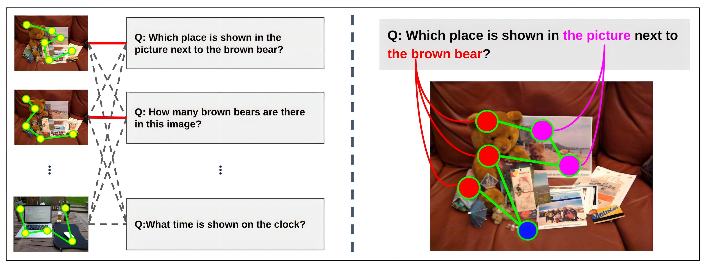

Learning Alignments of Human Gaze and Fine-grained Task Descriptions
Takumi Nishiyasu, Zhiming Hu, Andreas Bulling, Yoichi Sato
Proceedings of the ACM on Computer Graphics and Interactive Techniques, 2026, 9(2): 1-18.418

Abstract
We propose GTANet – a novel approach to learning the alignments between human gaze scanpaths and fine-grained task descriptions in vision-language tasks. While the influence of tasks on gaze is well known, the relationship between gaze scanpaths and fine-grained task descriptions remains largely unexplored. GTANet addresses this gap by aligning encoded spatiotemporal gaze features with text descriptions. We utilize a patch-based gaze encoder to generate gaze features that reflect visual contexts, and a multimodal feature mixer to fuse the gaze features and the task descriptions, capturing cross-modal alignment. To validate our method, we introduce two novel tasks: gaze-to-question and question-to-gaze retrieval. Experiments on the AiR and MHUG datasets demonstrate that GTANet consistently outperforms baseline methods across all Recall@K metrics, achieving substantial improvements in both retrieval directions. These results confirm the strong link between human gaze and fine-grained task descriptions, thus validating the effectiveness of our approach.Links
Paper: paper.pdf
Code: To-doBibTeX
@article{nishiyasu2026learning,
title={Learning Alignments of Human Gaze and Fine-grained Task Descriptions},
author={Nishiyasu, Takumi and Hu, Zhiming and Bulling, Andreas and Sato, Yoichi},
journal={Proceedings of the ACM on Computer Graphics and Interactive Techniques},
volume={9},
number={2},
pages={1--18},
year={2026},
publisher={ACM New York, NY, USA}
}